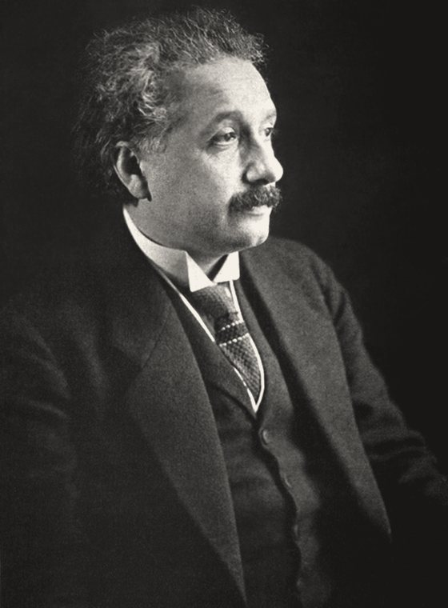
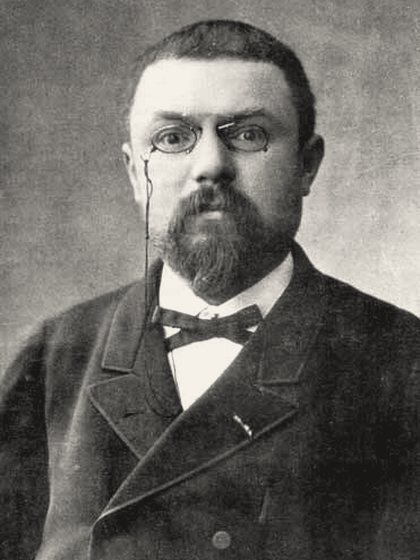
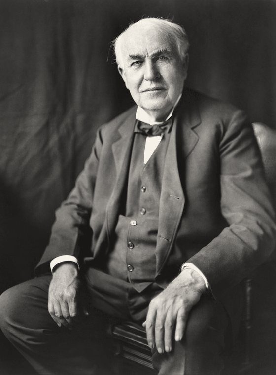
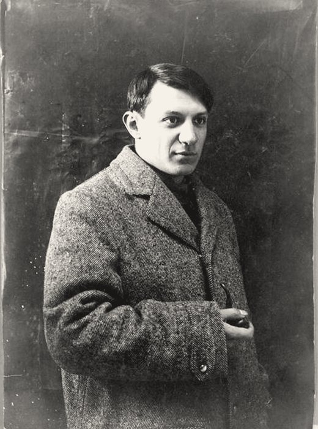

Tác phẩm
Nghĩ suy
cùng đất nước
cùng đất nước
Ngữ văn 12 Bài 3: Lập luận trong văn bản nghị luận
Một văn bản nghị luận về thứ năng lực mà máy móc không thể thay thế — và cách nó được nuôi dưỡng từ những điều bình dị nhất.
I Đọc — Định hướng tiếp cận
Ba huy hiệu, bốn cột mốc và một kệ sách đủ để thấy con đường từ toán học đến ngành Tin học Việt Nam.
II Đọc hiểu văn bản
Từ khái niệm đến phạm vi, từ bản chất đến chiến lược quốc gia — bốn luận điểm móc xích nhau như bốn trạm năng lượng.
Luận điểm 1
Từ khoá cốt lõi
Hoạt động tinh thần
riêng có của con người


Trích dẫn / Công thức
Thiên tài sáng tạo = Ý thức đổi mới × (Trí tưởng tượng + Trừu tượng hoá)2
F. Balibar, khi nói về thiên tài của A. Einstein
Ý tưởng như “những ánh chớp” — không xuất hiện khi “trời yên biển lặng”, chỉ bùng phát khi lao động cần mẫn tích tụ đủ “gió mây giông bão trí tuệ”.
H. Poincaré
Luận điểm 2
Phá bỏ định kiến
Sáng tạo KHÔNG
độc quyền cho giới “trí thức”.
Trong nền kinh tế tri thức, mọi người đều tham gia và đều có năng lực sáng tạo — từ người trực tiếp sản xuất, kinh doanh đến nhà khoa học.
10 chìa khoá CoachVille
Chìa khoá số 1: niềm tin mình là người sáng tạo.
Luận điểm 3
Bản chất chung
Tìm kiếm
những cái mới
Giá trị nhân sinh: “chút hạnh phúc thầm lặng của một sự thoả mãn tinh thần, một đời sống có ý nghĩa”.
Thực tại khốc liệt

“Trong mỗi phát minh có 1% cảm hứng và 99% việc đổ mồ hôi.”
Thomas Edison
Sáng tạo là lao động phức tạp, vất vả — nhưng cũng là chìa khoá hội nhập và vấn đề chiến lược của mọi quốc gia trong nền kinh tế tri thức toàn cầu hoá.
Luận điểm 4
Khẳng định
Sáng tạo vẫn là
năng lực riêng có
của con người.
Sáng tạo thường là việc riêng của từng bộ óc. Nhưng sự tiếp xúc, cọ xát giữa các bộ óc làm “ý tưởng nảy sinh ý tưởng” — nên sáng tạo cũng là kết quả của tập thể.

Công thức thời đại mới
Năng lực sáng tạo dân tộc = Công nghệ thông tin hiện đại ⊕ Trí tuệ sáng tạo con người
Sự “cộng năng” — sức mạnh của công nghệ tri thức hiện đại và trí tuệ riêng có của con người.
“Máy tính chỉ biết đưa ra câu trả lời.”
Pablo Picasso
Con người làm chủ cảm xúc, trực giác và những câu hỏi mới. Công nghệ khuếch đại trí tuệ — nhưng con người vẫn là chủ thể.
Làm rõ khái niệm, vai trò, phạm vi
Tạo nền tảngPhân tích bản chất, yếu tố ảnh hưởng & tầm vóc chiến lược
Móc xích logic, chặt chẽ.
Nghệ thuật lập luận
Trích câu nói của Balibar/Einstein, Poincaré, Edison & CoachVille.
Giá trị khoa học cao, củng cố luận điểm tuyệt đối, thể hiện tầm uyên bác của tác giả.
5 thao tác nghị luận
Chọn một thao tác để xem cách tác giả triển khai.
Làm rõ khái niệm sáng tạo và tầm quan trọng của ý tưởng.
Trong văn bản: từ định nghĩa sáng tạo → công thức Balibar → cơ chế “ánh chớp” của Poincaré.
Phản bác định kiến sáng tạo chỉ thuộc về giới “trí thức”.
Trong văn bản: đặt câu hỏi “phải chăng chỉ các ‘nhà’ trí thức?” rồi khẳng định mọi người đều sáng tạo.
Dùng thực tế & danh ngôn vĩ nhân làm sáng tỏ vai trò sáng tạo.
Trong văn bản: Einstein, Poincaré, Edison, 10 chìa khoá CoachVille, quy tắc 20% của Google.
Mổ xẻ biểu hiện, điều kiện phát triển và sự “cộng năng”.
Trong văn bản: phân tích lao động sáng tạo, động lực thị trường, sự cộng năng giữa công nghệ và con người.
Đánh giá ý nghĩa tinh thần và vị thế chiến lược quốc gia.
Trong văn bản: “chút hạnh phúc thầm lặng”, “sống còn – thành bại – hưng vong”.
II.4 & III Mục đích, chủ đề & giá trị
Mục đích — chủ đề — phong cách: ba lớp nghĩa hoà vào nhau trong cùng một lập luận.
Mục đích & Thái độ
Khơi dậy tiềm năng sáng tạo của mỗi cá nhân và cả dân tộc để “tiến kịp, tiến cùng thế giới”.
Tích cực, lạc quan, tin tưởng vào trí tuệ Việt Nam.
Chủ đề & Giá trị
Hòa hợp hữu cơ trong cùng một nhiệm vụ: nâng cao năng lực sáng tạo chung.
Phong cách nghị luận
Chuẩn mực khoa học, khúc chiết, mạch lạc.
Trung lập, khách quan nhưng kiên quyết, giàu tâm huyết công dân.
V Vận dụng & kết nối đọc – viết
Phải chăng sự sáng tạo sẽ giúp cuộc sống của mỗi người có thêm ý nghĩa?